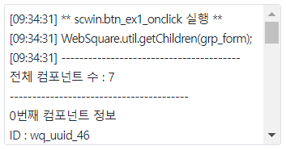

WebSquare.util.getChildren 예제입니다. 컨테이너성 컴포넌트를 받아 자손 컴포넌트를 배열로 반환 받는 예제입니다. 보통 Group 컴포넌트를 대상으로 사용합니다.
이 기능은 주로 공통 스크립트를 작성할 때 사용됩니다.Group 컴포넌트의 자식 컴포넌트만 반환 받기
Group 컴포넌트의 전체 자손 컴포넌트 반환 받기
Group 컴포넌트의 전체 자손 컴포넌트 중 Group, Span 컴포넌트를 제외하고 반환 받기
이 예제는 예제 화면의 영역 [로그 확인]의 textarea와 브라우저 개발자 도구의 콘솔에 반환 받은 컴포넌트 정보가 출력됩니다.
그림 1.로그 출력 영역 참고 이미지

1. 버튼 자식 컴포넌트만 반환 받기을 클릭합니다.
2. 로그 출력 영역에 반환 받은 컴포넌트 정보를 확인합니다.
1. 버튼 전체 자손 컴포넌트 반환 받기를 클릭합니다.
2. 로그 출력 영역에 반환 받은 컴포넌트 정보를 확인합니다.
1. 버튼 Group, Span 컴포넌트를 제외한 자손 컴포넌트 반환 받기을 클릭합니다.
2. 로그 출력 영역에 반환 받은 컴포넌트 정보를 확인합니다.
WebSquare.util.getChildren의 인자값은 컴포넌트 객체입니다.
아래는 group 컴포넌트의 id가 "grp_form"인 경우 스크립트 예시입니다.
(O) WebSquare.util.getChildren(grp_form);
(X) WebSquare.util.getChildren("grp_form");
(O) WebSquare.util.getChildren($p.getComponentById("grp_form"));
var arrComponents; //자식 컴포넌트가 담긴 배열이 반환됩니다. arrComponents = WebSquare.util.getChildren(grp_form);
var arrComponents; //자손 컴포넌트 전체가 담긴 배열이 반환됩니다. arrComponents = WebSquare.util.getChildren( grp_form, { recursive : true } );
var arrComponents; //group, span 컴포넌트를 제외한 자손 컴포넌트가 담긴 배열이 반환됩니다. arrComponents = WebSquare.util.getChildren( grp_form, { recursive : true, excludePlugin : "group span" } );